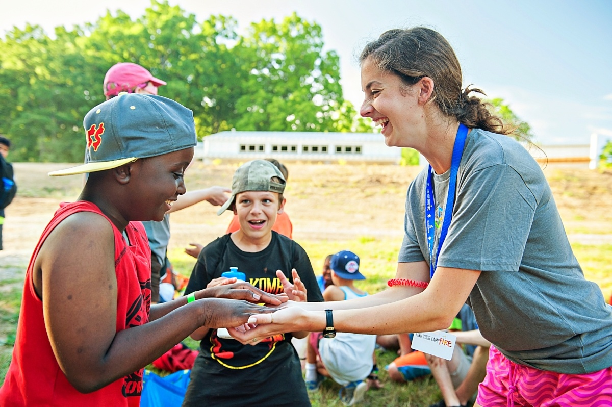
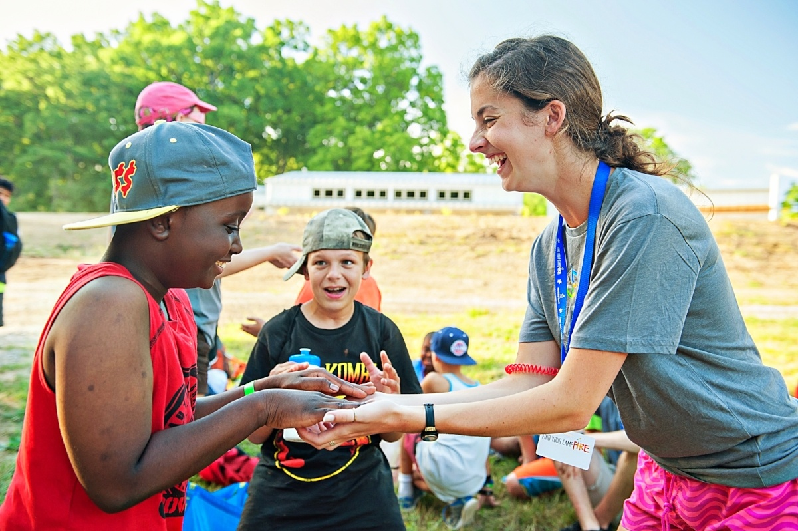
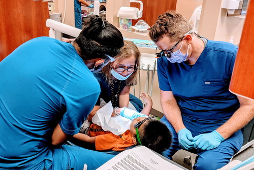
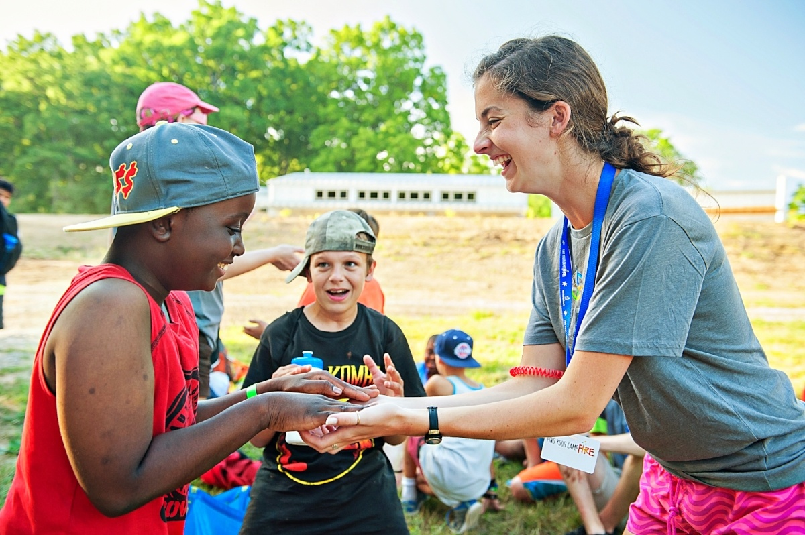
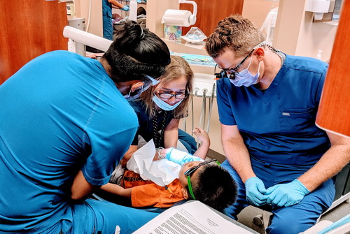

Amber Lai
Hello there! My name is Amber Lai and I am a fourth-year college student. I major in Biology and am currently attending the University of California Riverside.
I have a gentle disposition and pay close attention to details. I pay close attention and can rapidly identify the requirements of others and situations. For instance, I often notice those that are excluded from a group and want to become friends with them. When working on projects, I also tend to identify gaps and blind spots. I want to give decisions significant thought and consider how those choices may impact others. This action results from my capacity to perceive another person's sentiments honestly and objectively without necessarily sharing those feelings. When I communicate with individuals, I may use this strength to get their feedback and assist them with their concerns.
I also have a strong capacity for abstract reasoning. This indicates that I have a higher level of aptitude for solving complicated or multidimensional issues. Although I have not yet used this strength in the workplace, I can see its value when I apply it to my role as a mentor in the church. I find that the difficult issues that people encounter inspire me to consider various techniques for how to approach them. I also appreciate giving others fresh insights into the same circumstances so that they are more equipped to find solutions to their challenges. My interests are closely tied to my areas of strength. I enjoy serving others' needs and communicating with them. I have a soft spot in my heart for those who have fallen victim to the rat race of life, such as young children with learning disabilities, elderly persons without any close relatives, or social outcasts. For instance, I worked at a camp for kids with learning challenges in the year 2020. Being a part of the kids' life for two days and being able to show them love and tolerance despite my occasional frustration was a really fulfilling experience for me. Additionally, I recently worked as a volunteer at an animal shelter, and one of the highlights was getting to know people who had volunteered for almost all their life and continue to do so. I've also volunteered at hospice centers for the elderly that are in need and have also met many great people during that time.
I want to impact people's lives in some way. I aspire to give back to society in thanks for all that I have in life, including a prosperous existence, a secure place to call home, a solid education, excellent parents, good health, and devoted friends. This is possibly the main justification for my desire to work for the government. I want to help those around me at work and others who will indirectly benefit from my job gain understanding, joy, and hope. Thank you for your time in getting to know a little more about me! I am so excited to get involved and help others to the best of my abilities.
Experience
Volunteer at Animal Vaccination Clinic
• Handed out forms for Vaccination Clinic
• Organized all Vaccination Records
• Assisted patients with Vaccination Information
Volunteer at Hospice
• Assisted patient with getting around their house
• Provided patient with personal needs
Dental Assistant
• Organized patient files
• Assisted with present and future appointment information
• Stocked up on dental supplies for the office
• Advised dentist about patient's information
Education
UC Riverside
University of California Riverside
University of California Riverside
Portfolio
 


